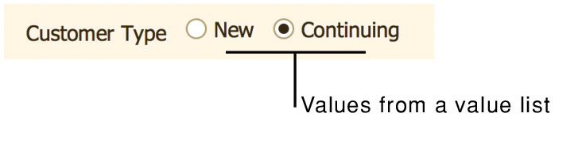

If a field uses the same set of text, number, date, or time values for many or all records, you can create a value list that includes those values. Then, format a field to display the values as a pop-up menu, a drop-down list, or as a series of checkboxes or radio buttons.
For example, define a value list that contains two values, New and Continuing. Then, define a Customer Type field to display the values in that list as radio buttons.

Value lists help make data entry faster and more accurate. You can display the values in a particular order; for example, by month or region.
Displaying data in a value list is a two-step process:
1. Create a value list. You can:
•Create a custom value list.
•Use values from a field in the current file or another file.
•Use values from an existing value list in another file.
2. In Layout mode, use the Inspector to format a field to display the values in a pop-up menu, drop-down list, checkboxes, or radio buttons.
This method is the easiest way to create a value list, because you type the values to be displayed.
1. Choose File menu > Manage > Value Lists.
2. In the Manage Value Lists dialog box, click New.
3. In the Edit Value List dialog box, for Value List Name, type a name.
4. Select Use custom values, then type each value on a separate line, in the order you want them to appear.
5. Click OK twice.
6. Format a field to display values from the value list. See Setting up a field to display a pop-up menu, checkbox set, or other control.
A value list created using this method is dynamically updated whenever the values change in the field that the list is based on. Also, if the field is in a related table, you can show all the values in the field, or only the related values.
1. Choose File menu > Manage > Value Lists.
2. In the Manage Value Lists dialog box, click New.
3. In the Edit Value List dialog box, for Value List Name, type a name.
4. Select Use values from field.
5. In the Specify Fields for Value List dialog box, for Use values from first field, select the table that contains the field you want, and then select the field in the list.
If the table you want is in another file and does not appear in the list, choose Manage Database from the list, and add the table to the relationships graph. See Creating and changing relationships.
6. Choose whether to display all the values in the field or only related values:
To include only related values in the value list, choose Include only related values starting from, and choose a related table from the list. The value list will only display field values from records that satisfy the relationship criteria specified between the related table and the table containing the field selected in the Use values from first field list.
7. To also display associated values from a second field, select Also display values from second field, select the table that contains the field you want, and then select the field in the list.
Select this option to display the values from a corresponding field after the values in your value list. For example, to help with data entry, you could display part names next to part numbers. If Also display values from second field is dimmed, first select a field in the left field list, as described in step 5.
Note During data entry, a value list that displays values from two fields still only enters data from the first field specified in step 5. The second field in the value list is for display only, and its value is not entered into any field. However, you could use a lookup to automatically enter the data from the second field. See Defining and updating lookups.
8. If you selected a second field to display values:
•Choose which field to use for determining the value list sort order.
•Choose Show values only from second field to display values from the second field, but store the data from the first field.
If you choose not to select Show values only from second field, the value list will display both fields; for example, a pop-up menu displays both fields.
9. If you want to display the values that are in a text field in a specific language's dictionary sort order, select Re-sort values based on and choose a language. Otherwise, the values are sorted in the index order of the field's default language. This setting is ignored for other types of fields.
See Choosing a language for indexing or sorting.
10. Click OK three times.
11. Format a field to display values from the value list. See Setting up a field to display a pop-up menu, checkbox set, or other control.
If the value list you want is already defined in another file, you can use that list instead of re-creating it.
1. Choose File menu > Manage > Value Lists.
2. In the Manage Value Lists dialog box, click New.
3. In the Edit Value List dialog box, for Value List Name, type a name.
4. Select Use value list from another file and, from the list, choose or add a data source containing the value list you want to use.
See Connecting to external data sources.
5. For Value list, select the value list from the other file.
Dimmed value lists are defined to show only related values from a field and cannot be referenced directly from another file. Instead, use the Use values from field option. (You will also need to add the table from the other file to the relationships graph in the current file.) To create this type of value list, follow the instructions above for defining a value list based on values in a field.
6. Click OK twice.
7. Format a field to display values from the value list. See Setting up a field to display a pop-up menu, checkbox set, or other control.
1. Choose File menu > Manage > Value Lists.
2. In the Manage Value Lists dialog box, edit, delete, or duplicate the list.
Note Redefining a value list item after data has been entered might cause unexpected results. For example, if you change a value list item from Accessory to Accessories, the field will appear to be empty on layouts where the field is formatted as a checkbox or radio button. Also, you will not find the existing records if you search for Accessories.
•If you want a field to always use the values in the value list, no matter what layout the fields object is on, specify a validation option in the field's definition. See Defining field validation.
•Fields from ODBC data sources can be used in value lists, but character large objects (CLOBs) such as long text strings are not supported.
•For value lists with ODBC data, the No access privilege and Limited custom privilege are not supported. To prohibit a user from seeing ODBC data in a value list, you must enforce row-level security in the external SQL database. See Editing value list privileges.